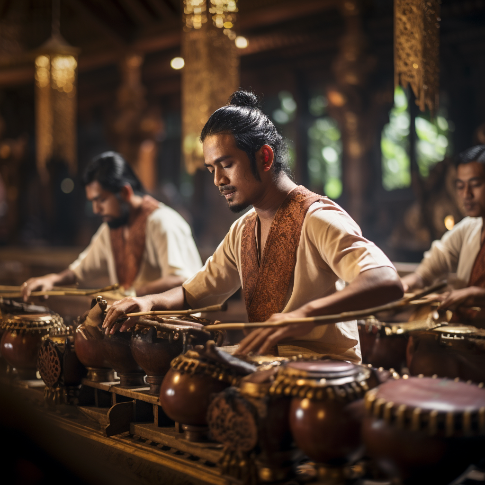

Gamelan Harmony
Immerse yourself in the enchanting melodies of the Indonesian gamelan orchestra as skilled musicians play traditional bronze instruments in perfect harmony. The gamelan's mesmerizing sounds have accompanied ceremonies, rituals, and performances for centuries, reflecting the interconnectedness of people and their deep spiritual connection to the arts. The intricate melodies and rhythmic patterns evoke a sense of unity and cultural identity, leaving audiences captivated by the unique sound of Indonesia.